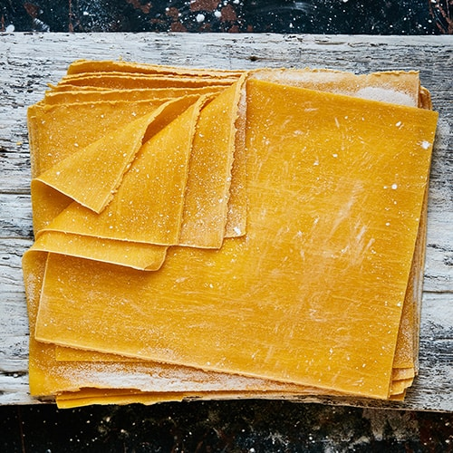

Lasagna sheets

Homemade lasagna sheets are easier to make than you think and you
don't even need a pasta machine! And forget about blanching the sheets
before baking -
no precooking is required!
Ingredients
- 2 ¼ cups Italian-style tipo 00 flour, plus additional for dusting
- 3 large eggs
- 1 pinch salt
- 1 tablespoon water as needed
Directions
- Place flour on a marble or wooden work surface. Make a well in the center and crack in eggs; add salt.
Gently beat eggs using a fork, incorporating the surrounding flour, until mixture is runny. Bring
remaining
flour into the mixture using a bench scraper until dough forms a ball. Mix in water,
1 tablespoon at a time, if dough feels too stiff.
- Knead dough with your hands by flattening the ball, stretching it, and folding the top towards the
center.
Turn 45 degrees
and repeat until dough is soft and smooth, about 10 minutes.
- Shape dough into a ball. Place in a bowl and cover with plastic wrap.
Refrigerate until firm, 30 minutes to 1 hour.
- Divide the dough into 3 equal portions. Take one piece and flatten it a bit with your hands. Dust a work
surface with flour and roll dough out using a rolling pin 5 to 6 times. Turn the dough 45 degrees and
roll
out again, 5 to 6 times. Keep rolling and turning in the same way until the dough is evenly very thin.
When you hold up the dough, you should be able to see your fingers through it.
- Cut the pasta into rectangular sheets to fit your baking dish using a pastry wheel or a knife. Transfer
lasagna sheets to a floured kitchen towel and let
air-dry about 30 minutes before assembling.
Back